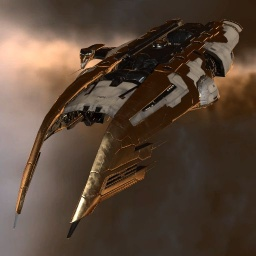

Coercer

Тип корабля: Эсминец
Государство/Организация: Amarr
Примерная стоимость: 1.190.000 ISK
Описание
Флот Амаррской Империи заказал создание эсминца типа «Коерсер» в ответ на активно применявшиеся матарами отряды, состоявшие лишь из маленьких и подвижных фрегатов. «Коерсеры» предназначены для поиска и уничтожения роёв малых кораблей.
Характеристики
Корпус
Запас прочности корпуса: 800 ед.
Вместимость грузового отсека: 375 м^3
Объем отсека для дронов: -
Пропускная способность канала телеуправления: -
Масса: 1.650.000 кг
Занимает объем: 47.000,0 м^3 (5.000,0 м^3 в разобранном виде)
Влияние инертности конструкции: 2,77x
Сопротивление корпуса ЭМ-урону: 33 %
Сопротивление корпуса термальному урону: 33 %
Сопротивление корпуса кинетическому урону: 33 %
Сопротивление корпуса фугасному урону: 33 %
Броня
Запас прочности брони: 900 ед.
Сопротивление брони ЭМ-урону: 50 %
Сопротивление брони термальному урону: 35 %
Сопротивление брони кинетическому урону: 25 %
Сопротивление брони фугасному урону: 20 %
Щит
Запас прочности щита: 700 ед.
Влияние на время регенерации щитов: 10 минут и 25 секунд
Сопротивление щита ЭМ-урону: 0 %
Сопротивление щита термальному урону: 20 %
Сопротивление щита кинетическому урону: 40 %
Сопротивление щита фугасному урону: 50 %
Сопротивление средствам РЭП
Сопротивление накопителя нейтрализирующему воздействию: 0 %
Сопротивление воздействию генератору стазис-поля: 0 %
Сопротивление воздействию помех на наводку вооружения: 0 %
Накопитель энергии
Емкость накопителя: 700,0 ГДж
Время востановления заряда: 6 минут и 10 секунд
Целеуказания
Максимальная дальность захвата цели: 30 км
Максимальное количество захваченных целей: 6
Радиус сигнатуры: 62 м
Разрешающая способность систем захвата цели: 525 мм
Эффективность радарной системы: 10 ед.
Эффективность магнитнометрической системы: -
Эффективность гравиметрической системы: -
Эффективность ладарной системы: -
Двигательная установка
Максимальная скорость: 255 м/с
Скорость в варп-режиме: 4,5 а.е./с.
Служба оснащения
Мощность ЦПУ: 168,0 Тф
Мощность реактора: 85 МВт
Калибровка: 400 ед.
Точки монтажа орудийных установок: 7
Точки монтажа пусковых установок: -
Разъемы большой мощности: 8
Разъемы средней мощности: 2
Разъемы малой мощности: 3
Разъемы под установку тюнинг-модулей: 3